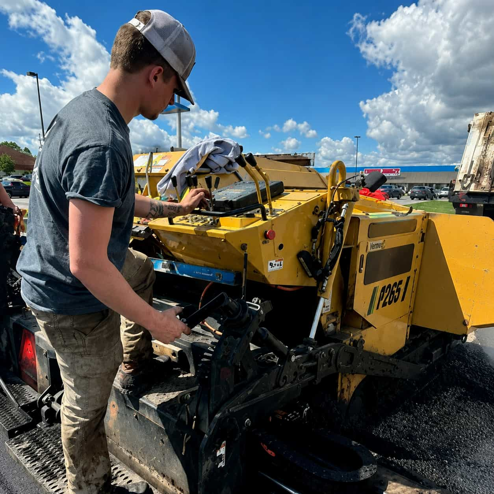

Driveway Areas
Start requests for worn, cracked, or newly planned driveway surfaces.
INDEPENDENT CONCRETE MATCHING
SlabWay helps homeowners connect with local concrete service providers for driveways, patios, slabs, repairs, stamped concrete, and walkways — all through one simple request path.
CONCRETE REQUEST TYPES
Start requests for worn, cracked, or newly planned driveway surfaces.
Organize outdoor surface details before comparing local provider options.
Share size, access, surface use, and project context in one clear path.
Compare options for decorative, stamped, smooth, or practical surfaces.
BEFORE YOU COMPARE
SlabWay helps homeowners organize useful concrete project details first, so local provider options can be compared with more context and less guesswork.
Request clarity
Share whether the request is about new concrete, replacement, repair, surface upgrades, or planning.
Planning info
Approximate dimensions, access points, slope, parking limits, and layout notes help organize the request.
Aggregator flow
SlabWay is an independent provider-matching platform. Homeowners review options and directly.
Surface details
Cracks, uneven areas, aging concrete, drainage concerns, or worn finishes can affect the comparison.

ABOUT SLABWAY
SlabWay is an independent concrete service matching platform that helps homeowners compare local provider options for driveways, patios, slabs, repairs, stamped concrete, and walkways. Instead of searching one contractor at a time, users can start one clear request and review concrete service options that fit their project.
POPULAR CONCRETE SERVICES
Explore the most requested concrete project categories and compare local provider options for the spaces that matter most around the home.
CONCRETE PROJECT QUESTIONS
Clear answers help homeowners describe the project better, compare provider options more easily, and understand what details may affect concrete service quotes.
You can start requests for concrete driveways, patios, slabs, repairs, stamped concrete, sidewalks, and walkways.
No. SlabWay is an independent provider-matching platform. SlabWay does not directly pour, install, repair, inspect, guarantee, or perform concrete work.
Helpful details include the project category, approximate size, surface condition, location, finish preferences, timeline, and access notes.
Yes. SlabWay is built to help homeowners review concrete service paths and compare local provider options before choosing what feels right.
Yes. Stamped concrete is one of the main service categories and can be started through the same request path.
Your request information helps organize the project category and supports comparison of local provider options connected to your concrete service path.
WHY START HERE
SlabWay gives homeowners a simple way to describe a concrete project before comparing local provider options. Driveways, patios, slabs, repairs, decorative finishes, and walkways can all begin from one clear request path.
The platform is designed to help users understand available concrete service paths and review provider options before choosing what feels right for the project.
Explore all concrete services